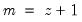
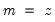
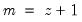
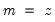

|
|
|
denote the series length and decompose
into its dyadic component and a remainder:
,
. The default maxscale
is then set with the following rules:
 then
then  , otherwise (2) if expanding the series,  and (3) if contracting the series .
, otherwise (2) if expanding the series,  and (3) if contracting the series . .
.